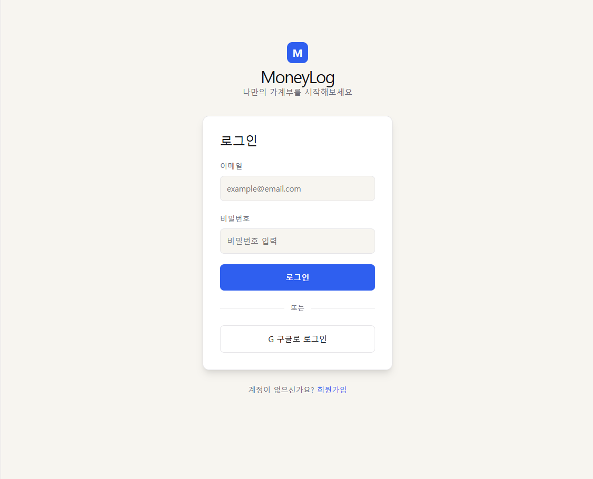
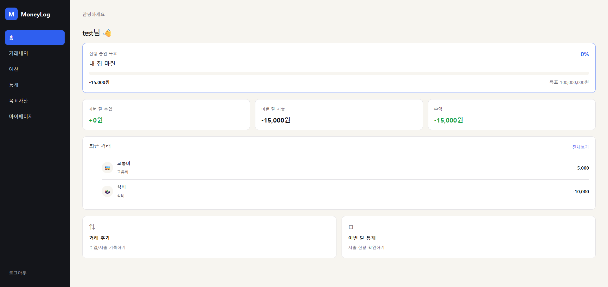
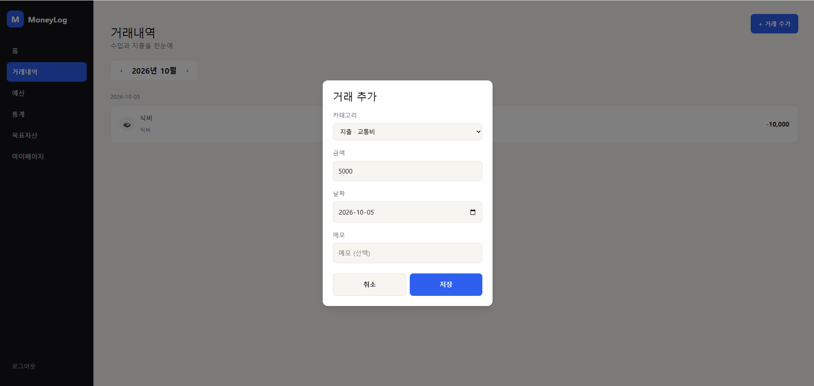
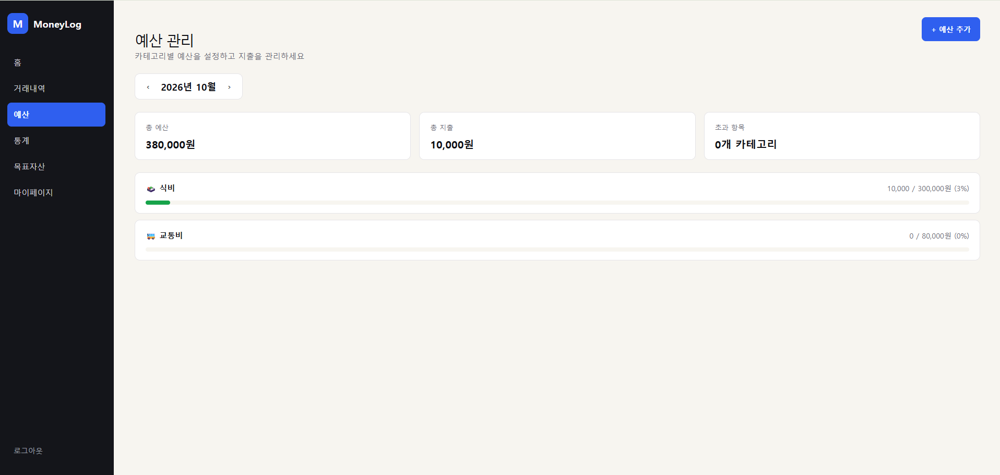
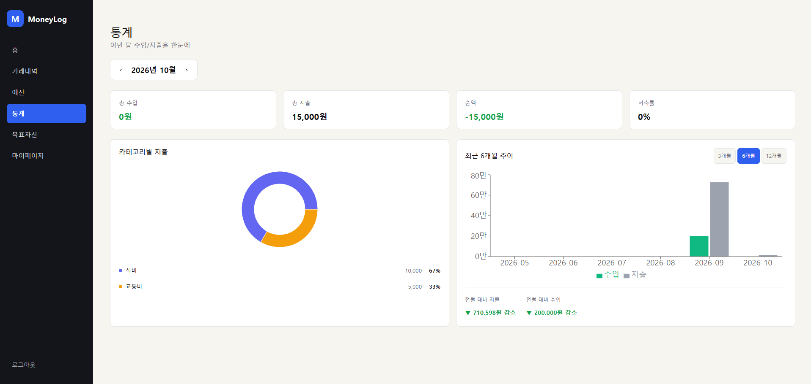
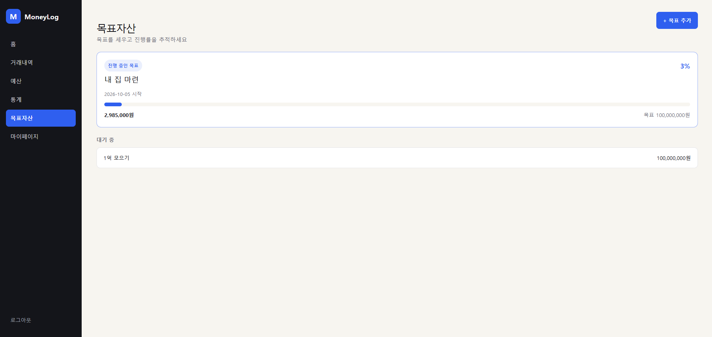
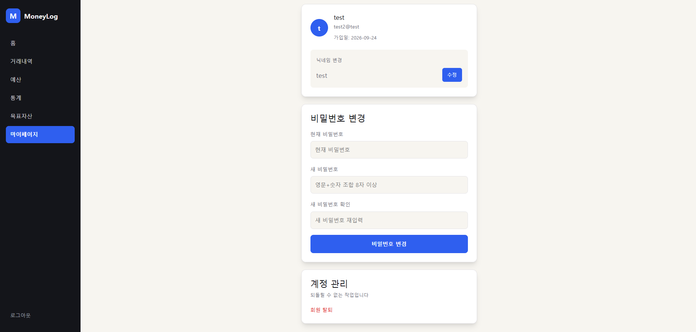

About
궁금한 게 있으면 일단 찾아보고 만들어보는 편입니다. 모든 걸 완벽히 이해하고 시작하기보다, 필요한 도구를 적극적으로 활용해 먼저 형태를 만들고 막히는 부분을 하나씩 채워나가는 방식으로 일합니다.
공공데이터 활용 풀스택 개발자 양성과정에서 웹 개발을 배웠고, 그 과정을 통해 하나의 서비스가 만들어지는 흐름 전체를 경험했습니다.
문제를 만났을 때 끝까지 붙잡고 해결하는 태도를 중요하게 생각합니다.
Skills
Project
DART 재무제표, 공공데이터포털 주가, KRX 지수, 한국수출입은행 환율을 매일 자동 수집해 PER·PBR·ROE·Piotroski F-Score 등 투자지표를 계산하고, 다팩터 가중 스코어링으로 저평가 우량주 TOP100을 추천하는 서비스입니다. 개인 투자일지(매수/매도 기록, 손익 관리) 기능도 함께 제공합니다.
홈 — 실시간 시세·랭킹 위젯 (10초 주기 갱신)
종목 스크리닝 — 필터·정렬·페이징
종목 상세 — 재무제표 추이, Canvas 차트
TOP100 — Piotroski F-Score 가중 스코어링
회원가입/로그인 — JWT 인증
마이페이지 — 정보 수정, 회원탈퇴
관심종목 등록/해제
투자일지 — 매수/매도 기록, 손익 관리
서비스 주제와 핵심 기능을 기획하고, 팀원별 역할과 개발 일정을 관리했습니다. 개발이 진행되며 팀원들의 의견이나 진행 상황에 따라 기능 범위와 일정, 역할을 유동적으로 조정하며 프로젝트를 이끌었습니다.
궁금한 부분을 계속 찾아가며 JWT 기반 로그인/회원가입, 마이페이지 인증 흐름을 구현했습니다. 구현을 마친 뒤에는 토큰 발급·검증 과정을 따로 복습하며 동작 원리를 이해하려 했습니다.
전역 예외처리(GlobalExceptionHandler)와 Swagger 문서화를 이번 프로젝트에서 처음 다뤄봤습니다. 컨트롤러마다 예외를 따로 처리하지 않고 한 곳에서 응답 형식을 통일할 수 있다는 것, API 스펙을 문서로 남겨 협업 비용을 줄일 수 있다는 것을 직접 적용해보며 익혔습니다.
문제 — Access Token은 보안을 위해 만료 시간을 짧게 두는 게 일반적입니다. 그런데 그렇게 두면 서비스를 이용하는 도중 토큰이 만료되어 API 요청이 401로 실패하고, 곧바로 로그인 페이지로 튕기는 문제가 생깁니다. 인증 흐름을 점검하면서 이 문제가 실제로 재현되는 걸 확인했습니다.
변화 — 프론트의 authFetch 요청 함수가 401 응답을 받으면
에러 코드가 ACCESS_TOKEN_EXPIRED인지 먼저 확인하고, 맞다면 저장해둔 RefreshToken으로 새
AccessToken을 발급받아 원래 요청을 자동으로 재시도하도록 바뀌었습니다. RefreshToken마저 없거나 만료된 경우에만
로그인 페이지로 이동합니다.
배운 점 — 토큰 만료를 단순 에러로 끝내지 않고 갱신 흐름으로 이어지게 설계할 수 있다는 것, 그리고 Access/Refresh Token을 분리해 두는 이유가 여기에 있다는 걸 알게 됐습니다.
문제 — 회원탈퇴를 소프트 삭제(soft delete)로 구현하면, 이미 발급된 Access Token은 탈퇴 여부와 무관하게 만료 전까지 계속 유효합니다. JWT는 서버가 상태를 갖지 않아도 검증되는 게 장점인데, 이 경우엔 탈퇴한 계정이 토큰이 살아있는 동안 API를 계속 쓸 수 있다는 문제로 이어질 수 있습니다.
변화 — JWTTokenProvider와 PrincipalDetailsService의
유저 조회 로직이 existsByEmailAndDeletedAtIsNull / findByEmailAndDeletedAtIsNull로
바뀌어, 토큰을 검증할 때마다 탈퇴 여부를 함께 확인하도록 반영됐습니다.
배운 점 — JWT의 "DB 조회 없이 검증 가능"하다는 장점과 "탈퇴를 즉시 반영해야 하는" 요구사항이 충돌할 수 있다는 것, 그리고 이럴 때는 무상태성을 일부 포기하고 매 요청마다 DB를 재확인하는 선택도 가능하다는 걸 확인했습니다.
문제 — 배포 환경을 점검하다가 nginx.conf와 Dockerfile이 정적 파일로
그대로 웹에 노출되고 있다는 걸 발견했습니다. .dockerignore에 해당 파일들을 추가해서 막으려 했는데,
그렇게 하니 Docker 빌드 자체가 깨졌습니다. .dockerignore가 빌드 컨텍스트에서 파일을 아예
제외해버리면서, Dockerfile 안에서 그 설정 파일을 COPY하는 단계도 함께 실패한 것이었습니다.
해결 — 방법을 바꿔 .dockerignore는 원래대로 되돌리고,
대신 Dockerfile 안에서 정적 파일 복사가 끝난 뒤 RUN rm -f로 노출되면 안 되는 설정 파일만
사후에 삭제하도록 했습니다.
배운 점 — 빌드에 필요한 시점(빌드 컨텍스트)과 최종 이미지에 남으면 안 되는 시점(런타임)은 서로 다르며, 그래서 "제외"가 아니라 "복사 후 삭제"로 접근을 바꿔야 했습니다.
수입/지출 기록, 카테고리별 예산 관리, 월별 통계, 목표자산 추적까지 제공하는 1인용 가계부 서비스입니다. 일반 로그인뿐 아니라 구글 OAuth2 소셜로그인을 직접 구현했고, Redis로 로그아웃/탈퇴 시 토큰 즉시 무효화와 사용자 캐싱을 적용했습니다. AWS EC2에 Docker Compose로 직접 배포해 운영 중입니다.

이메일 회원가입/로그인, 구글 소셜로그인(OAuth2). httpOnly 쿠키 기반으로 로그인 여부를 매 요청마다 서버에서 확인.

진행 중인 목표 위젯(진행률), 이번 달 수입/지출/순액 요약, 최근 거래 5건, 바로가기 카드.

월 단위 수입/지출 조회, 카테고리별 아이콘 표시, 등록/수정/삭제.

카테고리별 월 예산 설정, 지출 대비 진행률 표시, 초과 시 별도 색상 경고.

이번 달 수입/지출/순액/저축률, 카테고리별 지출 비중(도넛 차트), 최근 N개월 추이(막대 차트).

여러 목표를 등록해두고 하나씩 활성화, 활성 목표의 진행률을 조회 시마다 실시간 재계산.

닉네임/비밀번호 변경, 회원탈퇴(소프트 삭제 후 30일 유예). 700px 이하에서 사이드바가 드로어로 전환되는 반응형도 적용.
httpOnly 쿠키 + CSRF 토큰 기반 JWT 인증을 직접 구현한 뒤, 구글 OAuth2 로그인을 추가로 연동했습니다. 이메일 기준으로 일반 가입과 소셜 가입 계정을 자동 연결하고, state 값을 쿠키로 관리해 Spring Security의 STATELESS 설정을 그대로 유지했습니다.
로그아웃/탈퇴 시 AccessToken을 Redis 블랙리스트에 즉시 등록해, 남은 유효기간 동안 재사용되는 걸 막았습니다. 탈퇴 여부 조회에 5분 TTL 캐시를 적용했고, Redis 장애 시에도 인증 자체는 막히지 않도록 폴백 경로를 따로 설계했습니다.
Context로 로그인 여부만 전역 관리하고 나머지는 각 화면이 API로 직접 가져오는 구조로 설계했습니다. 공용 Modal/ConfirmDialog 컴포넌트화, 라우트 단위 코드 스플리팅, label-input 명시적 연결, 모바일 반응형(사이드바 드로어 전환)까지 적용했습니다.
문제 — 토큰 블랙리스트, 사용자 캐시, 범용 캐시를 각각 다른 제네릭 타입(RedisTemplate<String, String>, <String, UserAuthCache> 등)으로 주입받게 만들자, 서버 시작부터 required a bean of type 'RedisTemplate' that could not be found 에러가 났습니다.
원인 — Spring Boot 자동 설정이 만들어주는 기본 빈은 RedisTemplate<Object, Object> 하나뿐인데, Java 제네릭은 런타임에 타입 정보가 지워지는(type erasure) 특성 때문에 서로 다른 제네릭 타입을 요구하면 스프링이 주입 후보에서 제외한다는 걸 직접 겪으며 확인했습니다.
해결 — RedisTemplate<String, Object> 빈 하나를 명시적으로 등록하고 모든 서비스가 이 타입을 쓰도록 통일, 실제 타입이 필요한 곳은 instanceof 체크 후 형변환했습니다.
문제 — Redis 값 직렬화기를 설정하며 GenericJackson2JsonRedisSerializer에 Spring Boot 4 기본인 Jackson 3 ObjectMapper를 넘기려 하자 컴파일 자체가 안 됐습니다.
원인 — spring-data-redis 안에 이름이 거의 같은 두 클래스가 공존한다는 걸 공식 업그레이드 가이드를 보고 알게 됐습니다 — GenericJackson2JsonRedisSerializer("2"가 붙은 쪽, Jackson 2 전용, deprecated)와 GenericJacksonJsonRedisSerializer(Jackson 3 전용). 빌더 시작점도 ObjectMapper.builder()가 아니라 JsonMapper.builder()로 바뀌어 있었습니다.
해결 — GenericJacksonJsonRedisSerializer.builder().enableDefaultTyping(typeValidator).build()로 교체했습니다. 신버전은 PolymorphicTypeValidator 없이는 다형성 역직렬화를 기본으로 켜지 않도록 안전하게 설계가 바뀌어 있었습니다.
문제 — 월 이동 시 이전 요청을 취소하도록 AbortController를 도입하자 Cannot read properties of null (reading 'totalIncome') 에러로 화면이 깨지는 걸 겪었습니다. ErrorBoundary 덕분에 전체 화이트스크린은 막혔지만 원인을 찾아야 했습니다.
원인 — 요청이 취소(AbortError)돼도 finally가 실행되어 isLoading이 false가 되는데, 성공 데이터(summary)는 여전히 null인 채로 렌더링이 그대로 진행되고 있었습니다.
해결 — finally를 제거하고, 성공했을 때와 실제 에러(AbortError가 아닐 때)일 때만 setIsLoading(false)를 호출하도록 바꿨습니다.
문제 — 닉네임 변경 API가 200 OK를 응답하는데도 DB 값은 그대로였습니다. 코드에는 에러가 전혀 찍히지 않아 처음엔 원인을 특정하기 어려웠습니다.
원인 — @AuthenticationPrincipal로 받은 User는 인증 필터(별도 트랜잭션 경계)에서 조회된 객체라, 실제 서비스 메서드의 @Transactional이 시작되는 시점엔 이미 영속성 컨텍스트에서 떨어져 나간(detached) 상태였습니다. JPA의 더티 체킹(자동 UPDATE)은 현재 트랜잭션에 관리 중인(managed) 엔티티에서만 동작하기 때문에, detached 엔티티의 필드를 바꿔도 변경이 추적되지 않아 UPDATE 쿼리 자체가 나가지 않았던 것입니다.
해결 — 서비스 메서드 안에서 userRepository.findById()로 현재 트랜잭션에 attached된 엔티티를 다시 조회해 그 객체를 수정하도록 바꿨습니다. "Service에서 엔티티를 수정하기 전엔 재조회하라"는 Spring+JPA 조합의 알려진 패턴이라는 것도 같이 확인했습니다.
문제 — 구글 로그인/동의까지는 정상 진행되는데, 콜백 단계에서 매번 로그인 실패 페이지로 리다이렉트됐습니다. 기본 로그 레벨로는 백엔드 콘솔에 에러가 전혀 안 보여 원인을 좁히기 어려웠습니다.
원인 — Spring Security OAuth2 로그를 TRACE로 임시로 켜서 authorization_request_not_found 예외를 확인했습니다. OAuth2 state를 담은 쿠키에 SameSite=Strict를 적용해뒀는데, 구글에서 돌아오는 콜백은 브라우저 입장에서 교차 사이트 리다이렉트라 이 쿠키가 아예 실리지 않아 state를 찾지 못하고 있었습니다.
해결 — OAuth2 state 쿠키만 SameSite=Lax로 따로 지정했습니다(다른 쿠키는 Strict 유지). Lax는 최상위 탐색(리다이렉트 포함)에는 쿠키를 실어 보내되 배경 요청에는 안 실어, None보다 안전하면서 OAuth2 흐름은 정상 동작하는 절충점이었습니다.
문제 — 탈퇴 여부 체크를 추가한 뒤, 탈퇴한 계정으로 로그인하면 "탈퇴한 계정입니다"가 아니라 아예 "인증이 필요합니다"(401)가 응답되는 걸 겪었습니다. 로그인 요청 자체가 이 401로 막히고 있었습니다.
원인 — 인증 필터는 permitAll인 로그인 경로를 포함해 모든 요청에서 실행됩니다. 로그아웃 전 발급된, 아직 안 만료된 토큰이 브라우저에 남아있으면 필터가 그 토큰으로 사용자를 먼저 조회하는데, 새로 추가한 탈퇴 체크가 여기서 예외를 던지면서 필터 체인 자체가 끊겨 로그인 컨트롤러까지 요청이 도달하지 못했습니다.
해결 — 필터 안에서 이 예외를 잡아 인증 등록만 건너뛰고 다음 필터로는 항상 넘어가도록 수정했습니다. Spring Security 공식 GitHub 이슈에도 같은 패턴이 보고되어 있어, 흔히 겪는 문제라는 걸 확인하고 진행했습니다.
Journey
국비지원 교육과정
HTML/CSS/JS, Java, Spring Boot, MySQL, React, Docker, Jenkins, AWS EC2 등 웹 개발 전반을 학습했습니다.
팀 프로젝트
4인 팀을 꾸려 가치투자 스크리닝 서비스를 기획하고, 인증/보안/예외처리 파트를 담당해 개발했습니다.
1차 배포
CI/CD 파이프라인을 구축해 valuepick.cloud로 실제 서비스를 배포했습니다.
개인 프로젝트
JWT/OAuth2 인증, Redis 캐싱, React 상태관리를 직접 설계·구현부터 AWS EC2 배포, GitHub Actions CI/CD까지 전 과정을 진행했습니다.